CS184/284A Fall 2026 Homework 2 Write-Up
Link to webpage: cs184.eecs.berkeley.edu/fa26
Link to GitHub repository: cs184.eecs.berkeley.edu/fa26

Overview
In this assignment, I implemented several geometric modeling techniques ranging from Bezier curves and surfaces to local triangle-mesh editing and Loop subdivision. In the first section, I used de Castejau's algorithm to evaluate Bezier curves and extended the same idea to tensor-product Bezier surfaces. In the second section, I worked directly with the half-edge data structure to compute area-weighted vertex normals, flip edges, split edges, and finally use these local operations to implement Loop subdivision.
One of the most interesting ideas I learned from this assignment is the separation between geometry and topology . A vertex position describes geometry, while the half-edge pointers describe how the mesh is connected. Even when all vertex positions look reasonable, one incorrect next , twin , edge , or face pointer can make the entire mesh invalid. I also learned that complex global operations such as subdivision cenbe constructed from a small set of carefully implemented local operations such as edge splitting and edge flipping.
Section I: Bezier Curves and Surfaces
Part 1: Bezier curves with 1D de Casteljau subdivision
De Casteljau's algorithm evaluates a Bezier curve by repeatedly performing linear interpolation between adjacent control points. Given two neighboring points \(p_i\) and \(p_{i+1}\), and a parameter \(t \in [0,1]\), the next intermediate point is
\[ p_i' = (1-t)p_i + tp_{i+1}. \]If there are \(n\) control points, one evaluation step creates \(n-1\) intermediate points. Repeating this process reduces the control polygon from \(n\) points to \(n-1\), then \(n-2\), and so on until only a single pointzzremains. That final point is the location on the Bezier curve corresponding to the parameter \(t\).
I implemented this process in BezierCurve::evaluateStep. For each pair of adjacent points, I computed their linear interpolation using the current value of \(t\) and stored the result in a new vector. Each call therefore performs exactly one level of de Casteljau subdivision, while the application repeatedly calls this function to visualize the complete evaluation process.
For the screenshots below, I created my own Bezier curve containing six control points. Starting from six original control points, de Casteljau subdivision produces levels containing five, four, three, two, and finally one point.
|
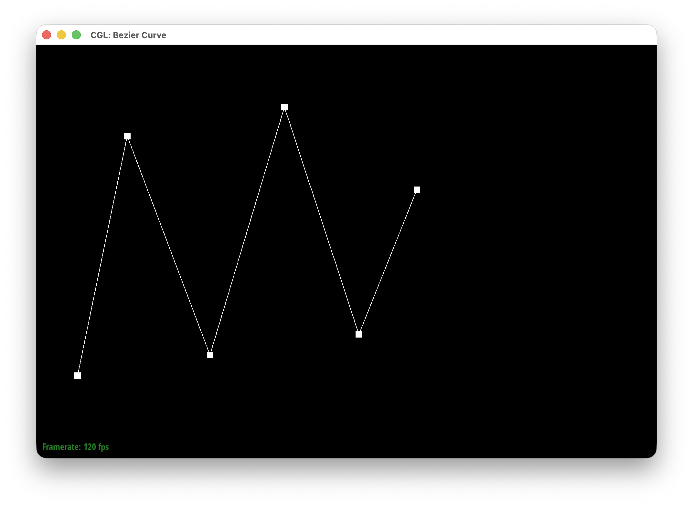 |
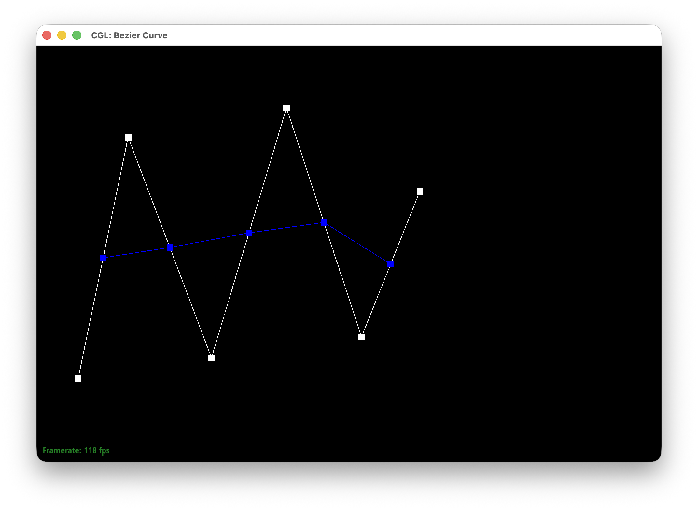 |
|
|
|
|
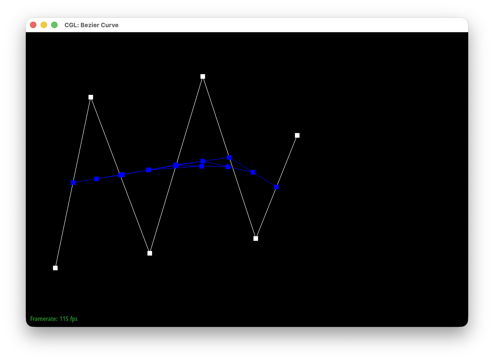 |
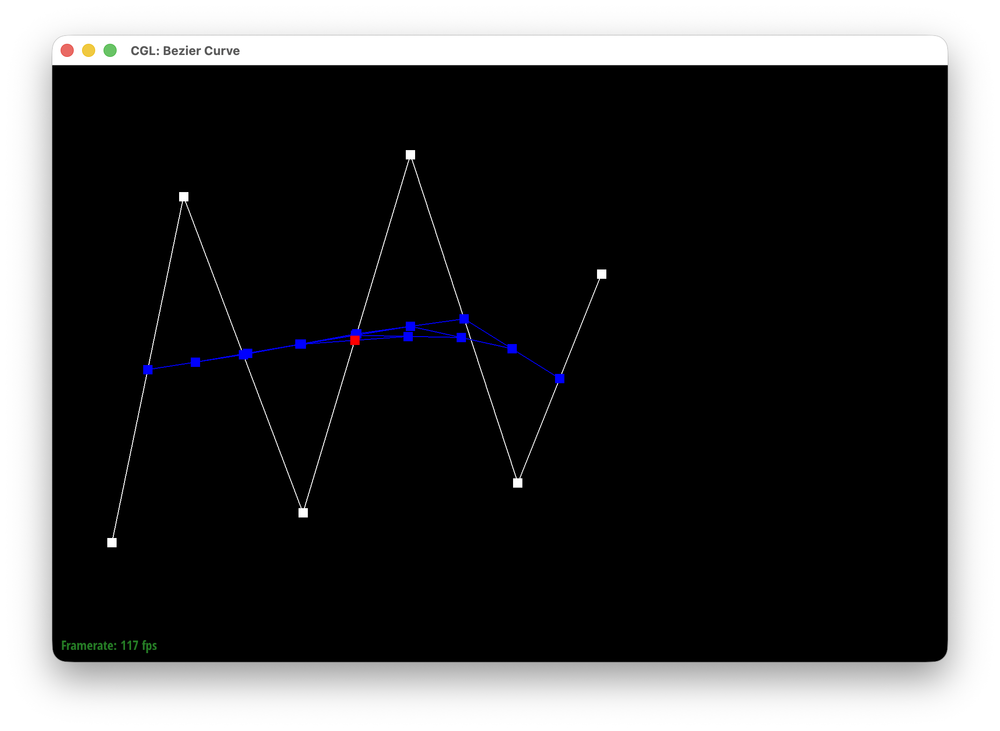 |
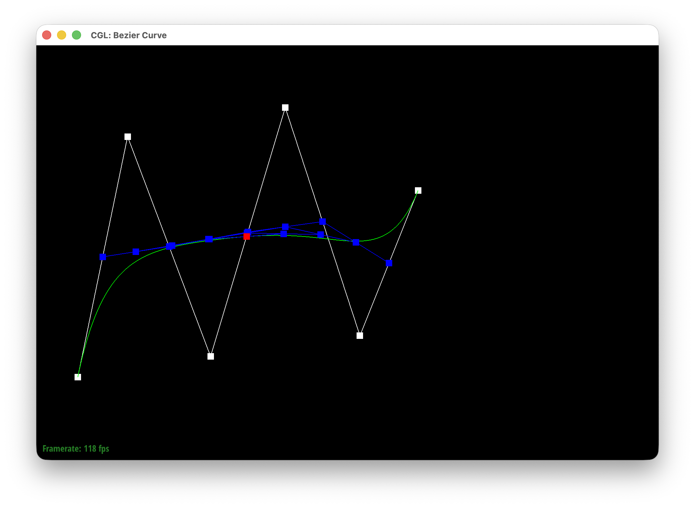
I also changed the positions of several original control points and modified the value of \(t\) using mouse scrolling. Moving the control points changes the shape of the curve, while changing \(t\) changes the evaluated point along that same curve. The intermediate points generated by de Casteljau's algorithm also change accordingly.
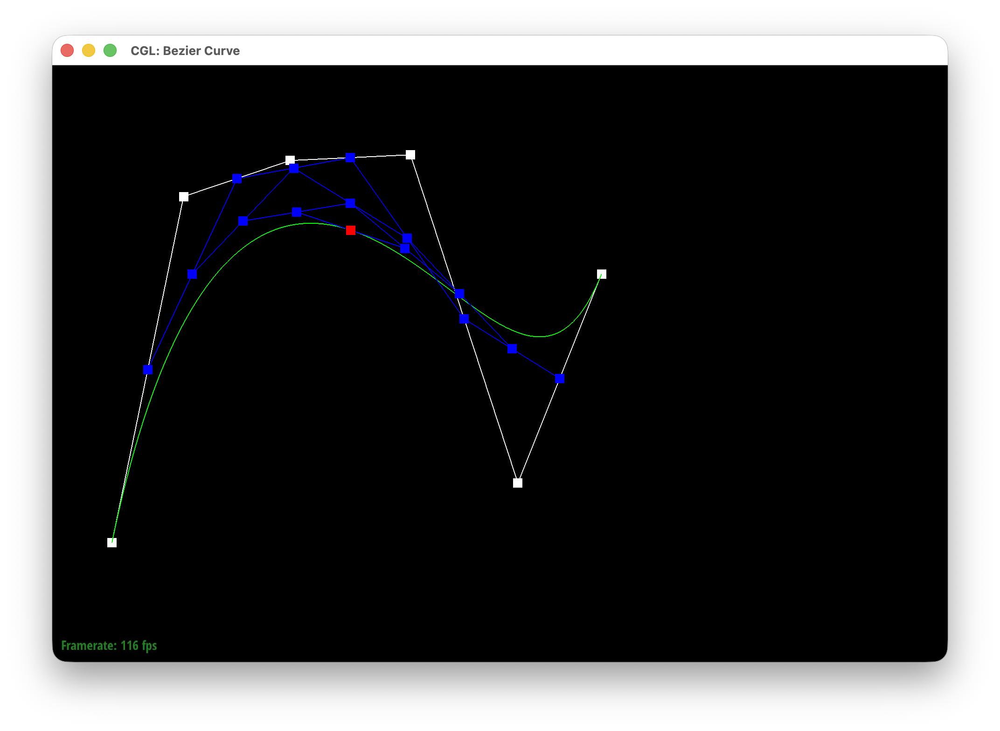
Part 2: Bezier surfaces with separable 1D de Casteljau
A Bezier surface extends the curve evaluation process to two parameters, \(u\) and \(v\). Instead of directly evaluating a 2D expression, the surface can be evaluated using the 1D de Casteljau algorithm twice.
I first evaluate each row of the control-point grid as a Bezier curve using parameter \(u\). Each row produces one intermediate 3D point. These intermediate points then form another Bezier curve, which I evaluate using parameter \(v\). The final result is a single point on the Bezier surface.
In my implementation, BezierPatch::evaluateStep performs one interpolation step on 3D control points. BezierPatch::evaluate1D repeatedly applies that operation until only one point remains. Finally, BezierPatch::evaluate evaluates each control-point row using \(u\), collects the resulting intermediate points, and then evaluates them using \(v\).
Let \(D_t(\cdot)\) denote one-dimensional de Casteljau evaluation using parameter \(t\). Conceptually, the surface evaluation is
\[ P(u,v) = D_v\left(D_u(\mathrm{row}_0), \ldots, D_u(\mathrm{row}_n)\right). \]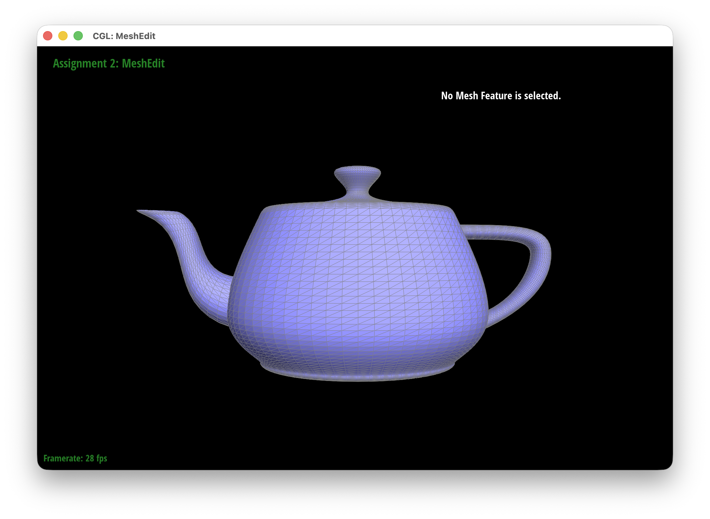
bez/teapot.bez evaluated using my Bezier surface
implementation.
Section II: Triangle Meshes and Half-Edge Data Structure
Part 3: Area-weighted vertex normals
To compute a smooth normal at a vertex, I traverse all triangles incident to that vertex using the half-edge data structure. Beginning with an outgoing half-edge, I move around the one-ring neighborhood using h = h->twin()->next().
For each neighboring triangle with vertices \(p_0\), \(p_1\), and \(p_2\), I compute
\[ N_f = (p_1-p_0) \times (p_2-p_0). \]The magnitude of this cross product is proportional to the area of the triangle. Therefore, summing the unnormalized normals automatically gives larger triangles more influence than smaller triangles:
\[ N = \sum_f N_f. \]After accumulating the normals of all incident non-boundary faces, I normalize the final result to obtain a unit vertex normal. These normals are then interpolated across the triangles during smooth shading.
|
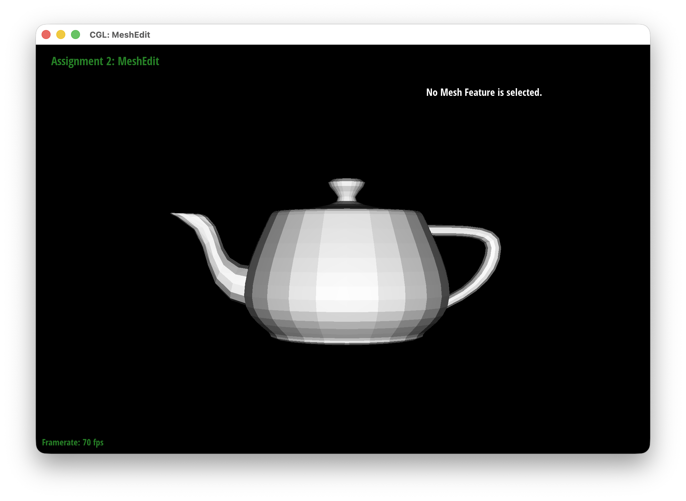 dae/teapot.dae with flat shading.
|
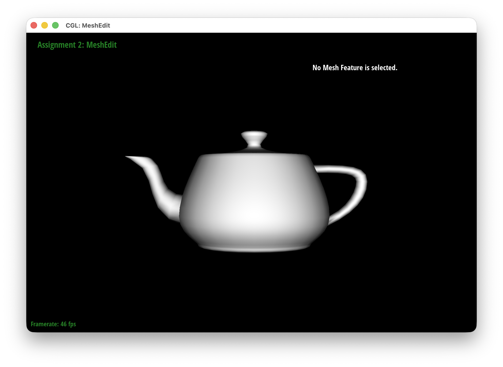 |
Part 4: Edge flip
An edge flip changes the local connectivity of two adjacent triangles without creating or deleting mesh elements. For an interior edge shared by two triangles, I first stored references to the six local half-edges, four vertices, surrounding edges, and the two faces. I then replaced the original diagonal of the local quadrilateral with the opposite diagonal.
The main challenge was correctly maintaining every half-edge pointer. For each affected half-edge, I explicitly reassigned its next, twin, vertex, edge, and face references using setNeighbors. I also updated the representative half-edge stored by all affected vertices, edges, and faces. Boundary edges are ignored because an edge flip requires two adjacent non-boundary triangles.
My main debugging strategy was to draw the two triangles before and after the flip and label all local half-edges. I explicitly wrote down each three-half-edge face cycle before translating the diagram into pointer assignments. I then tested the operation repeatedly on multiple regions of the teapot to verify that the connectivity remained valid after several flips.
|
|
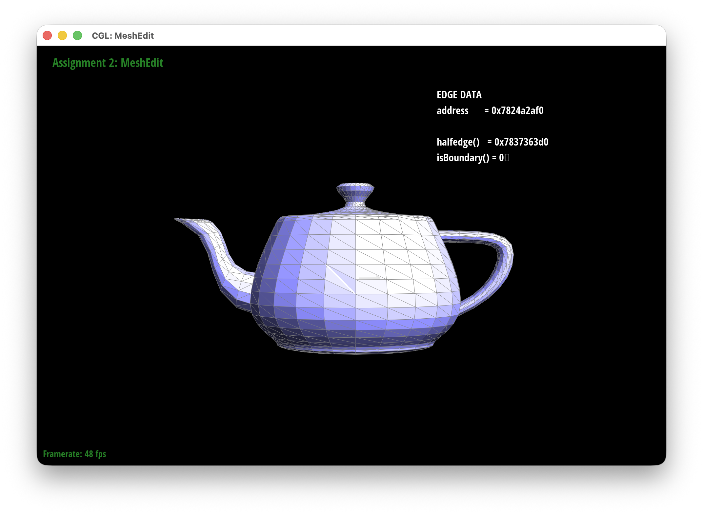 |
Part 5: Edge split
Edge splitting is more complicated than edge flipping because it creates new mesh elements. Given an interior edge shared by two triangles, I insert a new vertex at the midpoint of that edge and connect the new vertex to the two opposite vertices. The original two triangles are therefore replaced by four triangles.
The new vertex position is
\[ p_m = \frac{p_b+p_c}{2}. \] For each split, my implementation creates one new vertex, three new edges, six new half-edges, and two new faces. I reuse the original edge and the existing surrounding mesh elements whenever possible. I then explicitly define the four new three-half-edge cycles and assign the next, twin, vertex, edge, and face pointers for all locally affected half-edges.
This part produced one of the most useful debugging experiences in the assignment. At one point, pressing S caused the application to appear to freeze. Since a single split should perform only constant local work, I realized that the problem was likely an invalid mesh cycle rather than excessive computation. I found that one half-edge in the fourth new triangle had never had its next pointer reassigned. This meant a face traversal could fail to return to its starting half-edge.
I also discovered that several newly created edges had incorrect edge->halfedge() references. For example, an edge could point to a half-edge that geometrically belonged to another edge. Correcting these representative pointers and explicitly checking all four face cycles fixed the problem. Afterward, repeated splitting and alternating split/flip operations worked correctly.
|
|
|
|
|
|
Part 6: Loop subdivision for mesh upsampling
I implemented Loop subdivision by separating the calculation of new vertex positions from changes to the mesh topology. First, I compute all new positions using only the original coarse mesh. After these values have been stored, I refine the topology using edge splits and edge flips, and only then update the final vertex positions.
For an existing vertex of degree \(n\), I use
\[ p' = (1-nu)p + u\sum_{i=1}^{n}p_i, \]where
\[ u = \begin{cases} \frac{3}{16}, & n=3,\\ \frac{3}{8n}, & n\neq3. \end{cases} \]For a new vertex placed on an original edge with endpoints \(A\) and \(B\), and opposite vertices \(C\) and \(D\), I use
\[ p_{\text{new}} = \frac{3}{8}(A+B) + \frac{1}{8}(C+D). \] These positions are initially stored in Vertex::newPosition and Edge::newPosition. I do not immediately overwrite Vertex::position, because all Loop weights must be calculated from the same original mesh.
Next, I save all original edges before modifying the mesh and split each original edge exactly once. Saving these iterators is important because otherwise the iteration could also process newly created edges, causing subdivision to continue indefinitely. New vertices and new cross-edges are tracked using the isNew flags. After all splits, I flip every new edge whose endpoints consist of exactly one old vertex and one new vertex. Finally, I copy all precomputed newPosition values into the actual vertex positions.
Behavior under repeated Loop subdivision
Loop subdivision both increases the number of triangles and smooths the geometry. Sharp corners and edges therefore become increasingly rounded after repeated subdivision. This happens because each new position is a weighted average of neighboring vertex positions. The subdivision process can therefore be viewed as topology refinement combined with local geometric smoothing.
Pre-splitting edges near sharp features can reduce how quickly those features disappear because the added vertices provide more local geometric support. However, without an explicit crease rule, repeated ordinary Loop subdivision will still converge toward a smooth surface.
|
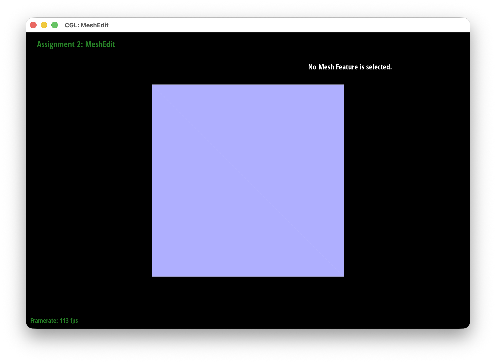 |
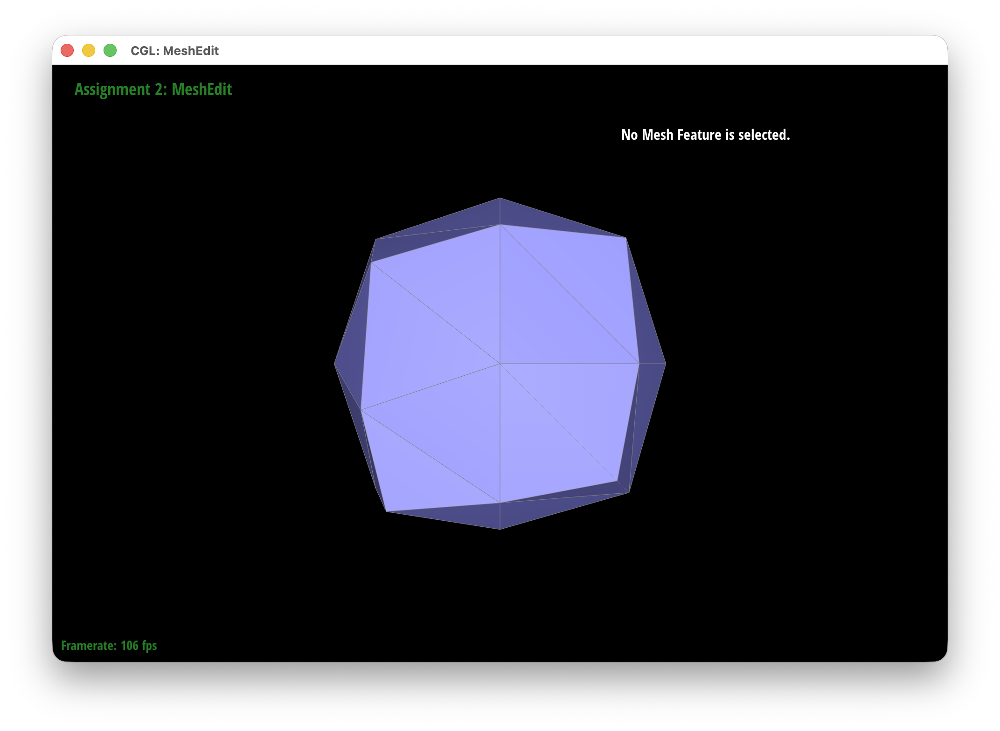 |
|
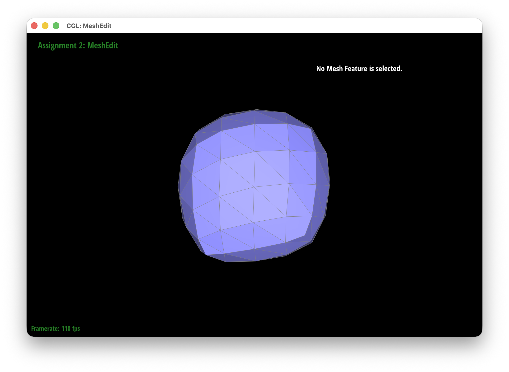 |
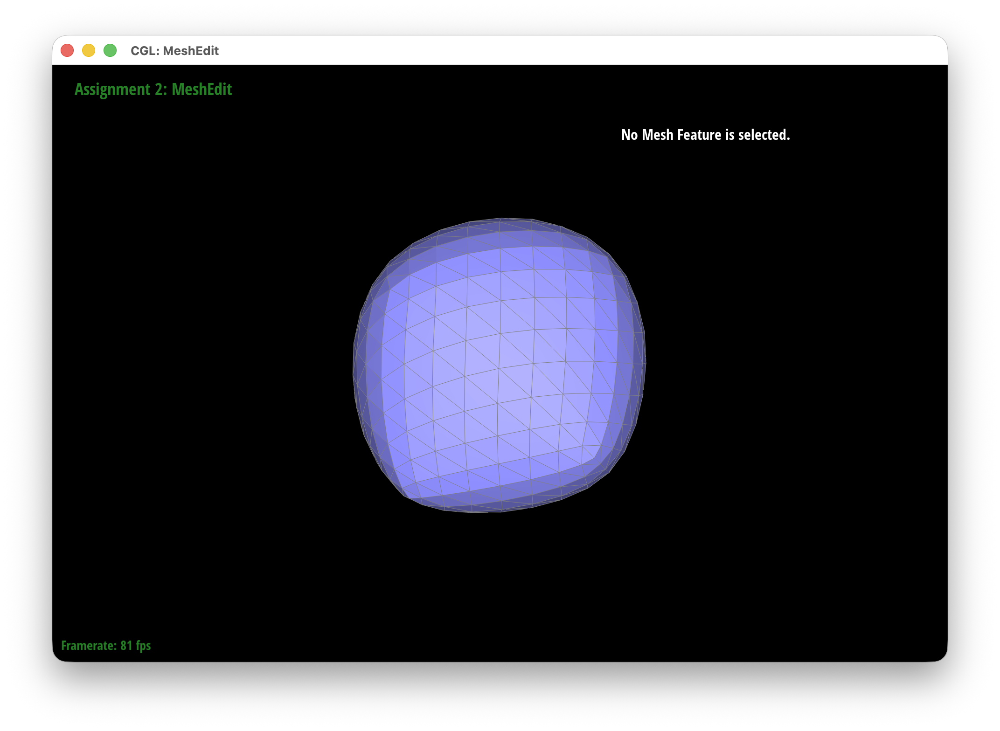 |
Why the original cube becomes asymmetric
Although the original cube is geometrically symmetric, its triangulation is not perfectly symmetric. Each square face must be represented by two triangles, so a diagonal is introduced across each face. These diagonals cause geometrically equivalent corners to have different local one-ring connectivity and potentially different vertex degrees.
This matters because the Loop subdivision rule depends directly on the connectivity of a vertex and its neighboring vertices. Therefore, two corners that are geometrically symmetric can receive different weighted averages if their one-ring neighborhoods differ. These small differences accumulate under repeated subdivision, causing the ordinary subdivided cube to become slightly asymmetric.
Pre-processing the cube for symmetric subdivision
To reduce this asymmetry, I pre-processed the cube by splitting the diagonal of each original square face. Before preprocessing, each square face consists of two triangles separated by a single diagonal. Splitting that diagonal introduces a midpoint at the center of the square face and connects it to the other two corners, producing four triangles on that face.
I repeated this process for all six faces of the cube. After preprocessing, every original cube corner has the same type of local neighborhood: each corner connects to the three neighboring cube corners as well as the center vertex of each of its three incident faces. This makes the one-ring connectivity much more symmetric, so the Loop subdivision weights act more consistently on geometrically equivalent parts of the cube.
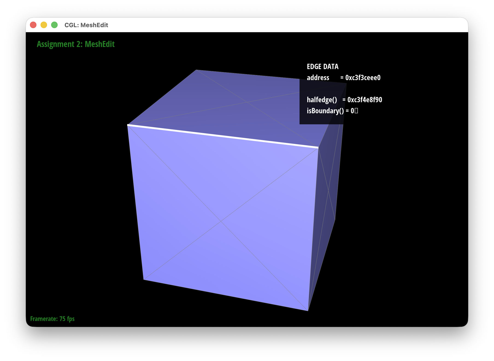
|
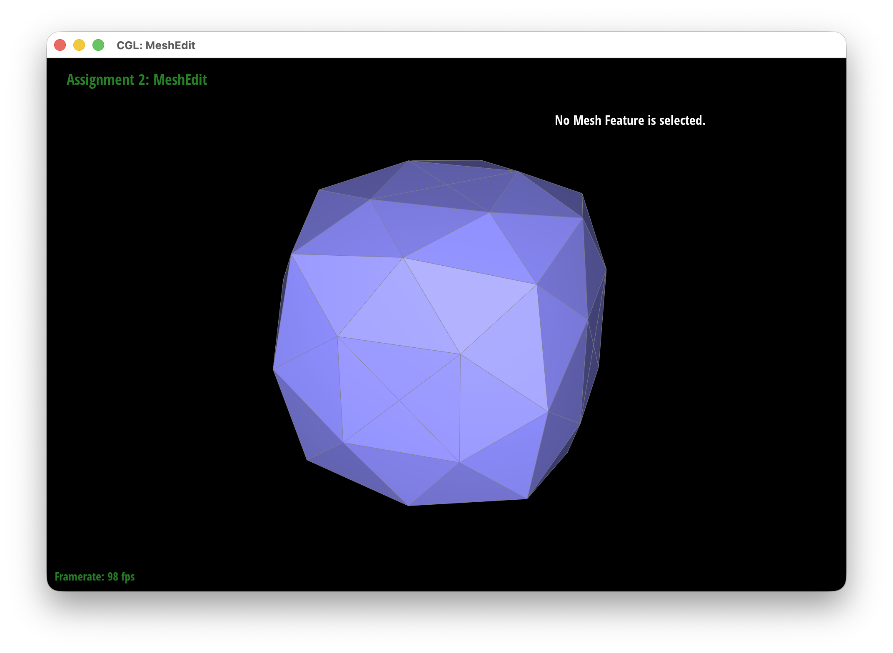 |
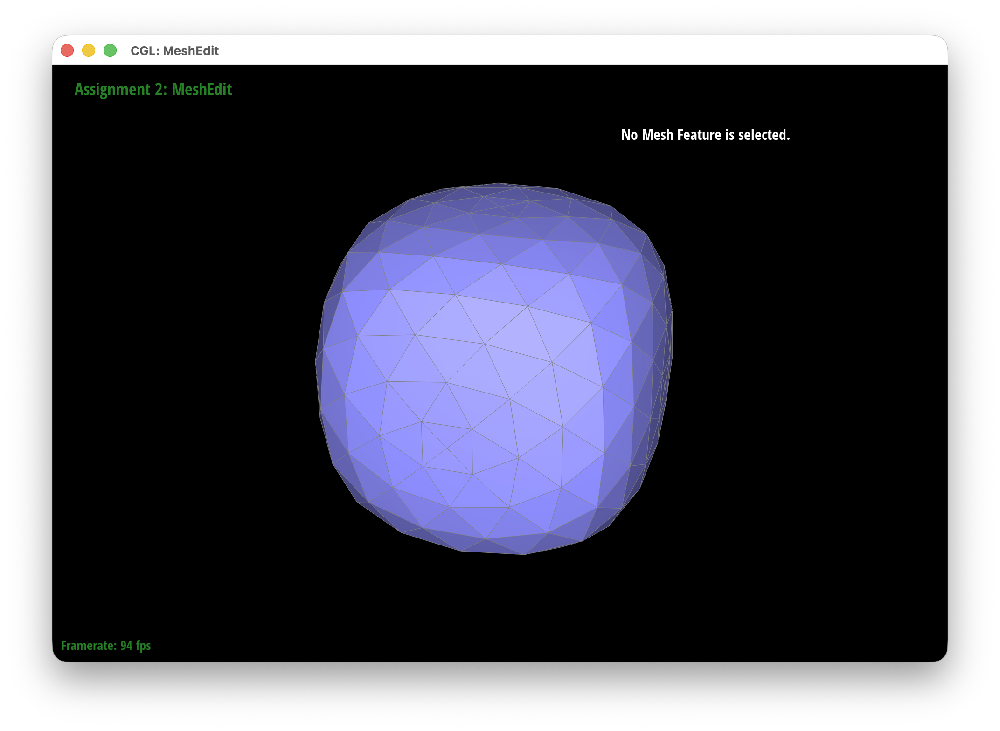 |
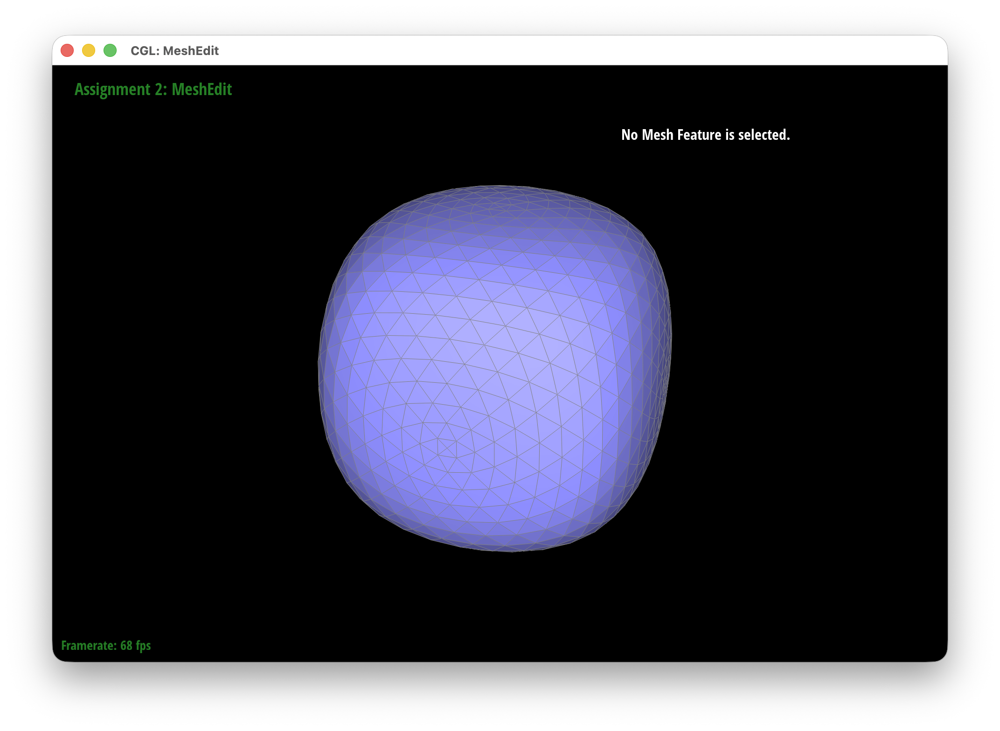
Debugging Loop subdivision
Debugging Loop subdivision required separating the algorithm into stages. One issue I encountered was an incorrectly placed brace that caused the entire edge-processing and subdivision procedure to run inside the loop over original vertices. This repeatedly subdivided an already subdivided mesh, causing the number of mesh elements to grow extremely quickly.
I also initially selected the wrong opposite vertex when computing the new position associated with an edge. If h represents the half-edge \(A \rightarrow B\), then h->next()->vertex() is still \(B\). The opposite triangle vertex must instead be obtained with h->next()->next()->vertex().
To isolate topology bugs, I added temporary progress messages after each stage of subdivision: computing old-vertex positions, computing edge-associated positions, splitting all original edges, and flipping eligible new edges. I also checked several mesh invariants, including whether every triangular face formed a three-half-edge cycle, whether twins were mutually consistent, and whether every edge's representative half-edge actually referenced that edge. These checks made it much easier to distinguish slow computation from an invalid topology that caused the renderer to traverse indefinitely.